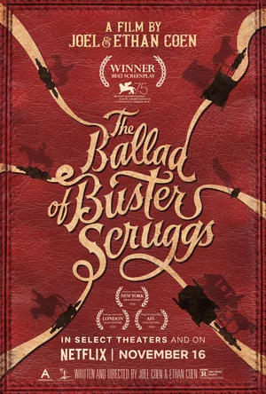

Когда засуха приводит человечество к продовольственному кризису, коллектив исследователей и учёных
отправляется сквозь червоточину (которая предположительно соединяет области пространства-времени
через большое расстояние) в путешествие, чтобы превзойти прежние ограничения для космических
путешествий человека и переселить человечество на другую планету.
Когда засуха приводит человечество к продовольственному кризису, коллектив исследователей и учёных
отправляется сквозь червоточину (которая предположительно соединяет области пространства-времени
через большое расстояние) в путешествие, чтобы превзойти прежние ограничения для космических
путешествий человека и переселить человечество на другую планету.
 Преследуемый призраками беспокойного прошлого Макс уверен, что лучший способ выжить -
скитаться в одиночестве. Несмотря на это, он присоединяется к бунтарям, бегущим через всю пустыню на
боевой фуре, под предводительством отчаянной Фуриосы. Они сбежали из Цитадели, страдающей от тирании
Несмертного Джо, и забрали у него кое-что очень ценное. Разъярённый диктатор бросает все свои силы в
погоню за мятежниками, ступая на тропу войны - дорогу ярости.
Преследуемый призраками беспокойного прошлого Макс уверен, что лучший способ выжить -
скитаться в одиночестве. Несмотря на это, он присоединяется к бунтарям, бегущим через всю пустыню на
боевой фуре, под предводительством отчаянной Фуриосы. Они сбежали из Цитадели, страдающей от тирании
Несмертного Джо, и забрали у него кое-что очень ценное. Разъярённый диктатор бросает все свои силы в
погоню за мятежниками, ступая на тропу войны - дорогу ярости.
 Жизнь Томаса Андерсона разделена на две части: днём он - самый обычный офисный работник, получающий
нагоняи от начальства,
а ночью превращается в хакера по имени Нео, и нет места в сети, куда он не смог бы дотянуться. Но
однажды всё меняется — герой,
сам того не желая, узнаёт страшную правду: всё, что его окружает — не более, чем иллюзия, Матрица, а
люди — всего лишь источник
питания для искусственного интеллекта, поработившего человечество. И только Нео под силу изменить
расстановку сил в этом чужом
и страшном мире.
Жизнь Томаса Андерсона разделена на две части: днём он - самый обычный офисный работник, получающий
нагоняи от начальства,
а ночью превращается в хакера по имени Нео, и нет места в сети, куда он не смог бы дотянуться. Но
однажды всё меняется — герой,
сам того не желая, узнаёт страшную правду: всё, что его окружает — не более, чем иллюзия, Матрица, а
люди — всего лишь источник
питания для искусственного интеллекта, поработившего человечество. И только Нео под силу изменить
расстановку сил в этом чужом
и страшном мире.
 Шесть историй - пять реинкарнаций, происходящих в разное время, тесно переплетаются между собой...
Шесть историй - пять реинкарнаций, происходящих в разное время, тесно переплетаются между собой...

События разворачиваются на Диком Западе в маленьких захолустных городках среди бескрайних
американских
прерий и высокогорных равнин. В этом суровом мире, где каждый сам за себя, царит один закон:
выживает сильнейший
.webp) Двое бандитов Винсент Вега и Джулс Винфилд ведут философские беседы в перерывах между разборками и
решением
проблем с должниками криминального босса Марселласа Уоллеса. В первой истории Винсент проводит
незабываемый вечер
с женой Марселласа Мией. Во второй рассказывается о боксёре Бутче Кулидже,
купленном Уоллесом, чтобы сдать бой. В третьей истории Винсент и Джулс по нелепой случайности
попадают в неприятности.
Двое бандитов Винсент Вега и Джулс Винфилд ведут философские беседы в перерывах между разборками и
решением
проблем с должниками криминального босса Марселласа Уоллеса. В первой истории Винсент проводит
незабываемый вечер
с женой Марселласа Мией. Во второй рассказывается о боксёре Бутче Кулидже,
купленном Уоллесом, чтобы сдать бой. В третьей истории Винсент и Джулс по нелепой случайности
попадают в неприятности.
.webp) Старшеклассница Нацумэ Мотидзуки была начинающей фотомоделью и снималась для обложек глянцевых
журналов,
пока родители не решили внезапно переехать всей семьей из Токио в родной городок отца Укигумо.
У девушки трагедия — про карьеру можно забыть, но знакомство с новым одноклассником Кои Хасэгавой
меняет её жизнь.
Старшеклассница Нацумэ Мотидзуки была начинающей фотомоделью и снималась для обложек глянцевых
журналов,
пока родители не решили внезапно переехать всей семьей из Токио в родной городок отца Укигумо.
У девушки трагедия — про карьеру можно забыть, но знакомство с новым одноклассником Кои Хасэгавой
меняет её жизнь.
.webp) Тайлер Гейдж — уличный танцор. Безумный и рискованный стиль жизни заставляет его конфликтовать с
обществом.
После очередного инцидента, Тайлер попадает в школу, в которой будет вынужден отрабатывать наказание
в виде исправительных работ.
Там он знакомится с девушкой, которая открывает ему глаза на его талант и окружающий его мир…
Тайлер Гейдж — уличный танцор. Безумный и рискованный стиль жизни заставляет его конфликтовать с
обществом.
После очередного инцидента, Тайлер попадает в школу, в которой будет вынужден отрабатывать наказание
в виде исправительных работ.
Там он знакомится с девушкой, которая открывает ему глаза на его талант и окружающий его мир…
.webp) Два американских судебных пристава отправляются на один из островов в штате Массачусетс,
чтобы расследовать исчезновение пациентки клиники для умалишенных преступников.
При проведении расследования им придется столкнуться с паутиной лжи, обрушившимся ураганом и
смертельным бунтом обитателей клиники.
Два американских судебных пристава отправляются на один из островов в штате Массачусетс,
чтобы расследовать исчезновение пациентки клиники для умалишенных преступников.
При проведении расследования им придется столкнуться с паутиной лжи, обрушившимся ураганом и
смертельным бунтом обитателей клиники.